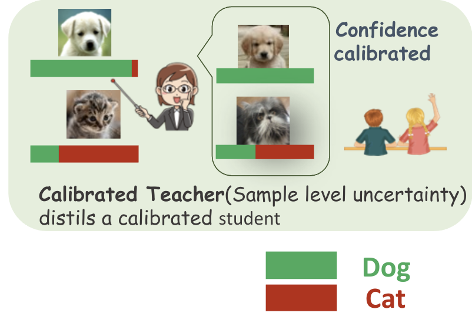
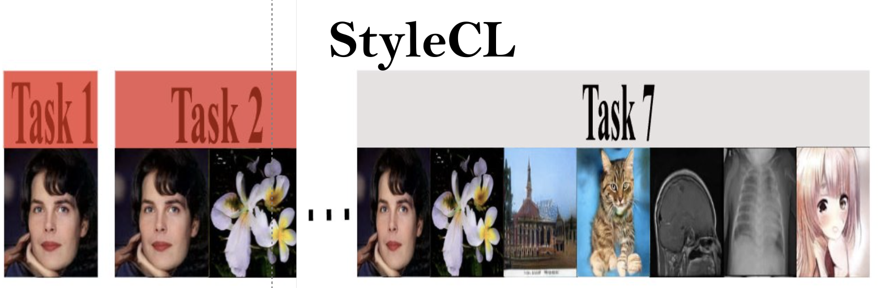
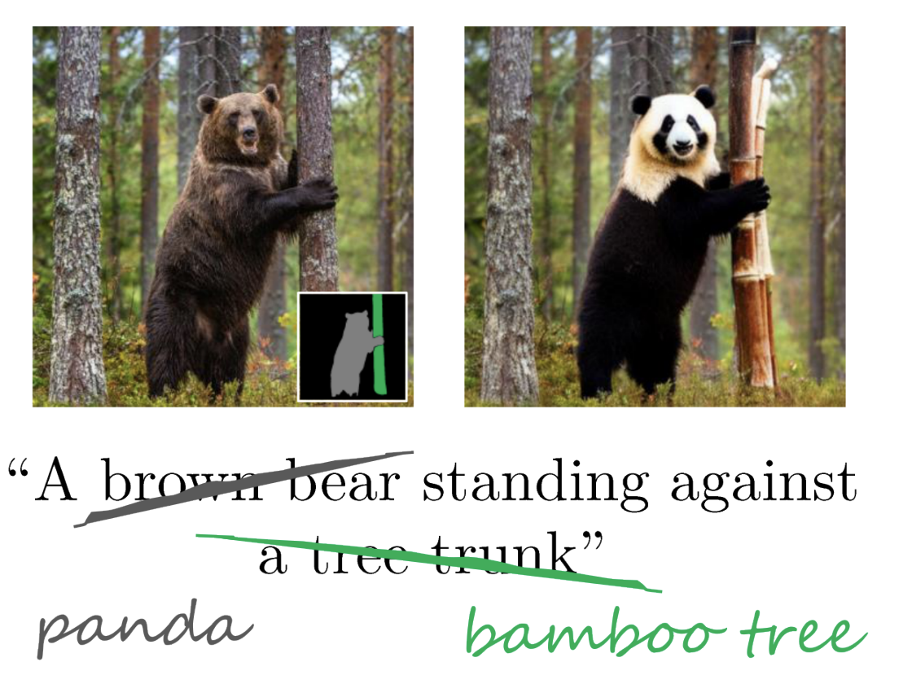
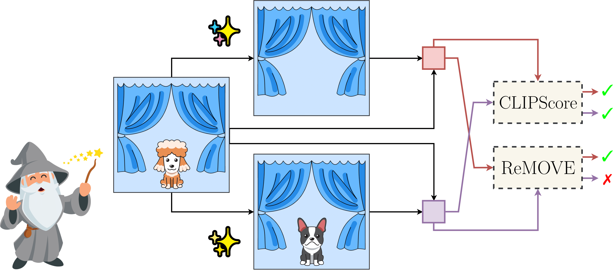
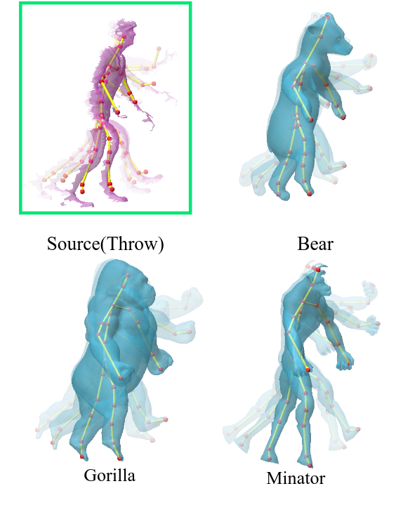
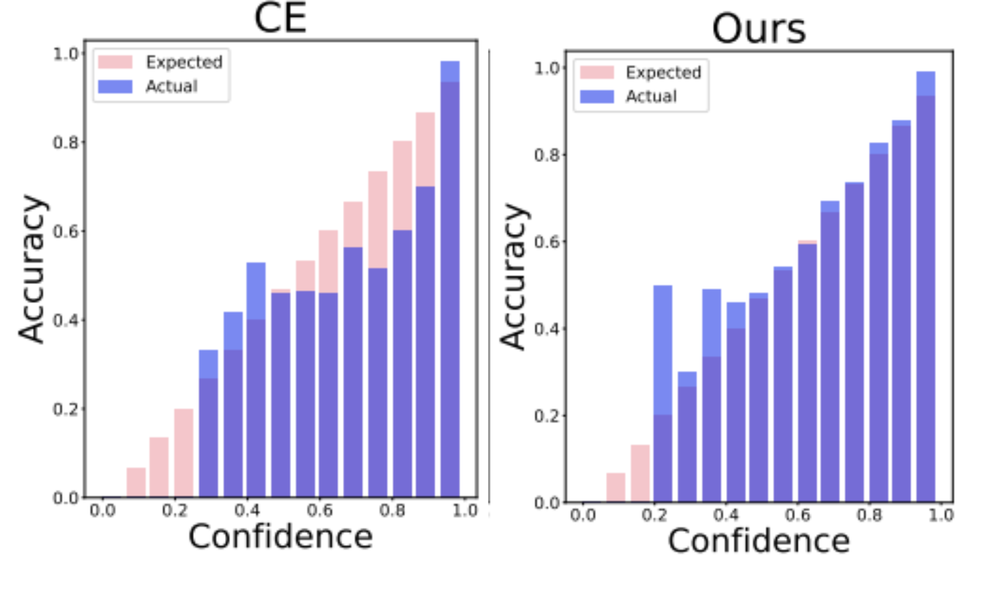
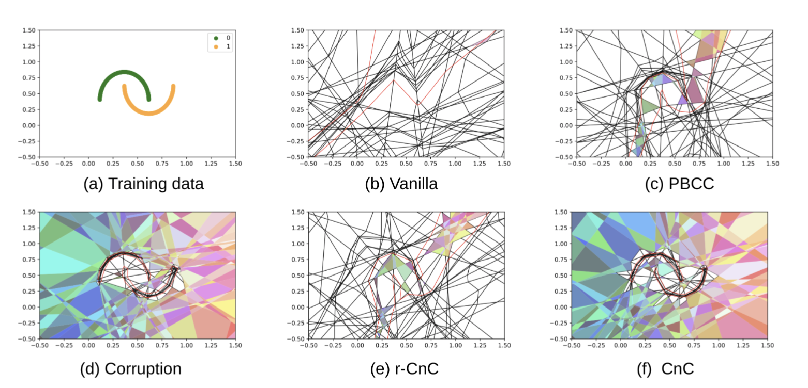
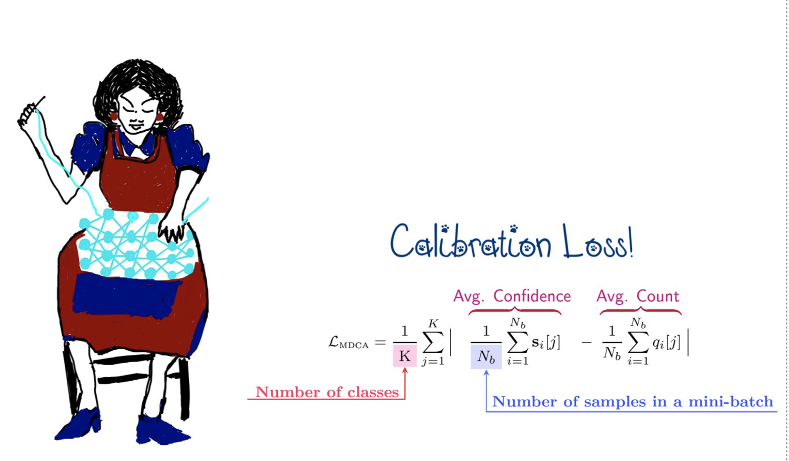

{kind=link}
Reliable Deep Learning
Confidence calibration, refinement, uncertainty estimation, and OOD detection.
Reliable machine learning for deep neural networks and vision-language models — spanning confidence calibration, out-of-distribution detection, refinement, distillation, and test-time adaptation.
I am a Senior Scientist at TCS Research, working in the Deep Learning and Artificial Intelligence Group at the Research and Innovation Park, IIT Delhi. My doctoral research, supervised by Prof. Chetan Arora at IIT Delhi, focuses on improving the reliability of deep neural network classifiers.
A central theme of my research is that accuracy alone is not sufficient for deployment in safety-critical settings. I develop methods that make models not only accurate, but also aware of their uncertainty, robust under distribution shift, and better calibrated for real-world decision making.
Before my doctoral research, I worked with Prof. Ramakrishna Kakarala at Nanyang Technological University on HDR imaging for smartphone camera pipelines. This work received the Best Student Paper Award at SPIE 2012. I completed my Master’s degree at Dublin City University, advised by Prof. Noel O'Connor and Prof. Alan Smeaton, where I worked on reducing false alarms in surveillance camera networks.
Reliability as a first-class design principle rather than a post-hoc correction.
Confidence calibration, refinement, uncertainty estimation, and OOD detection.
Knowledge distillation, compression, and calibrated student models.
Prompt calibration, VQA reliability, and test-time adaptation.
Generative image editing, motion transfer, and 3D/4D vision.
Recent publications and research updates.
Representative work across reliability, calibration, VLMs, and visual computing.
A debate-based multi-agent framework where specialized VLMs answer and generalist agents critique and aggregate responses to produce better-calibrated confidence estimates for VQA.

A unified reliability view connecting refinement and calibration, showing how representation learning can improve both discriminative utility and confidence quality.

An attribute-aware zero-shot test-time calibration approach for vision-language models, improving confidence reliability without retraining on task-specific labeled data.

A continuous-domain approach to curve skeletonization for meshes and point clouds, designed to handle geometric structure across diverse 3D inputs.

A representation-focused calibration method that addresses overconfidence by improving feature quality rather than only reshaping logits after training.

Knowledge Distillation for Calibration (KD(C)) extends distillation beyond accuracy transfer to produce lightweight, accurate, and well-calibrated models.

StyleCL enables lifelong learning in StyleGAN through task-specific latent subspace dictionaries and lightweight feature adaptors while reducing catastrophic forgetting.

A zero-shot multi-diffusion framework for localized multi-object editing, supporting additions, replacements, and edits in a single pass.

A reference-free metric for assessing object erasure in diffusion-based image editing, especially where no clean reference image exists.

A frugal alternative to expensive motion-capture pipelines, transferring motion from incomplete single-view depth video to semantically similar target meshes.

A differentiable calibration loss and dynamic data pruning strategy to improve calibration while reducing training effort.

Compounded Corruptions (CnC) synthesizes OOD-like samples without hold-out OOD data and improves OOD detection accuracy and inference-time behavior.

MDCA is a train-time multi-class calibration objective that can be combined with task losses across image, NLP, speech, and segmentation settings.
Research and Innovation Park, IIT Delhi.
Interns (Summer 2025): Arman Fatima (IIT Dharwad), Ishita Jain (GaTech), Ayush Pandey (IISER Bhopal), Khuushi Maheshwari (MIT), and Nishant Singh (IIIT Delhi).
Researchers including full-time members, pre-doctoral fellows, and research interns.
Student supervision and thesis mentoring.